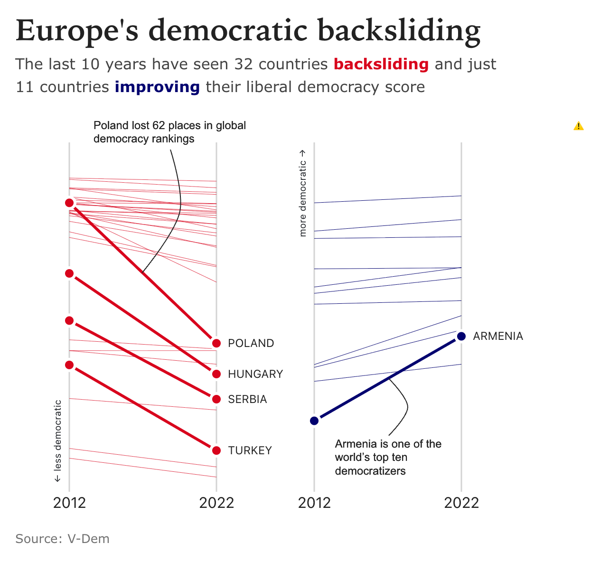
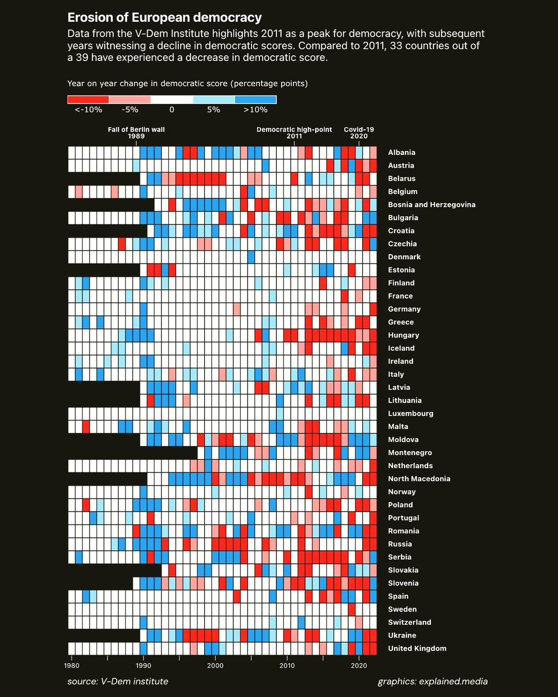
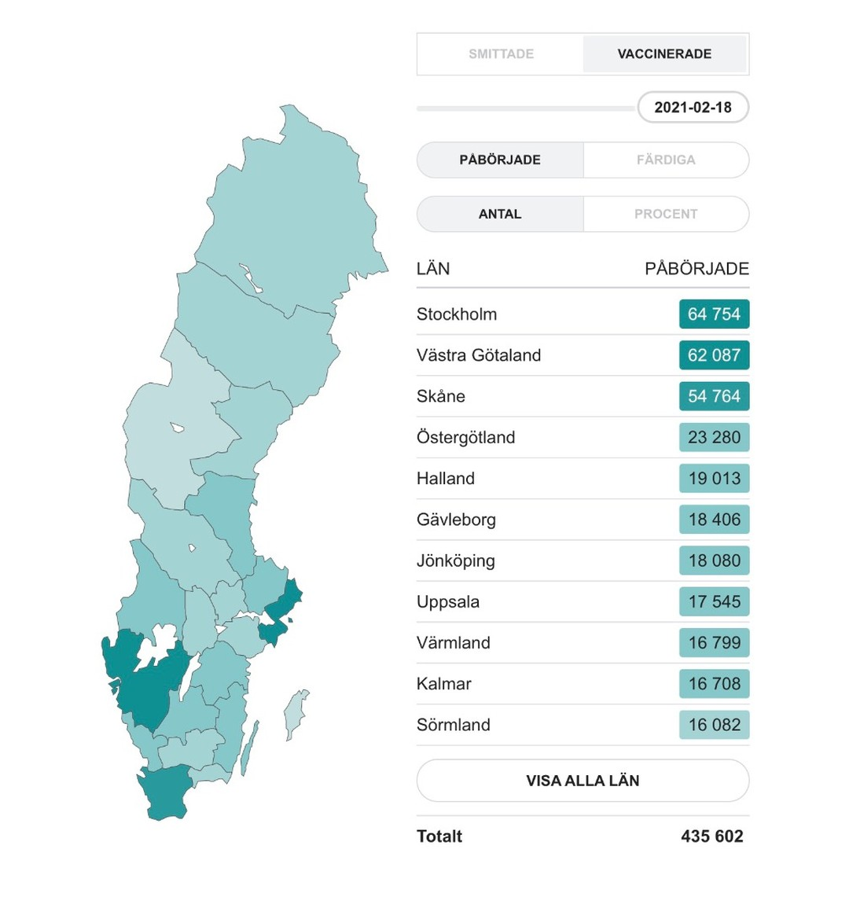
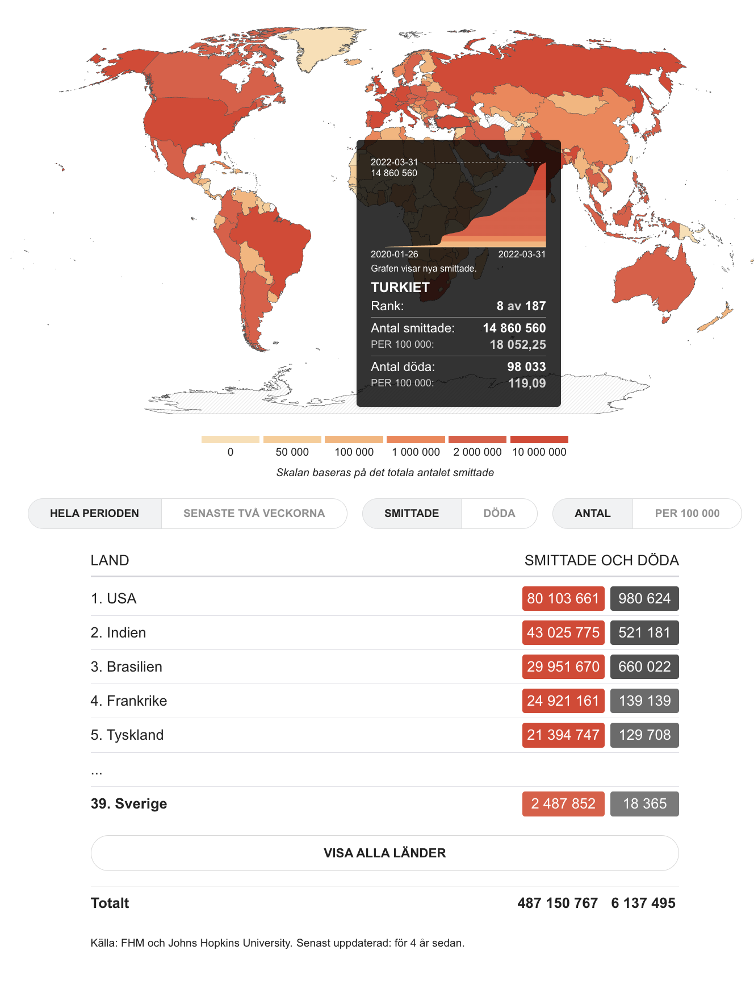
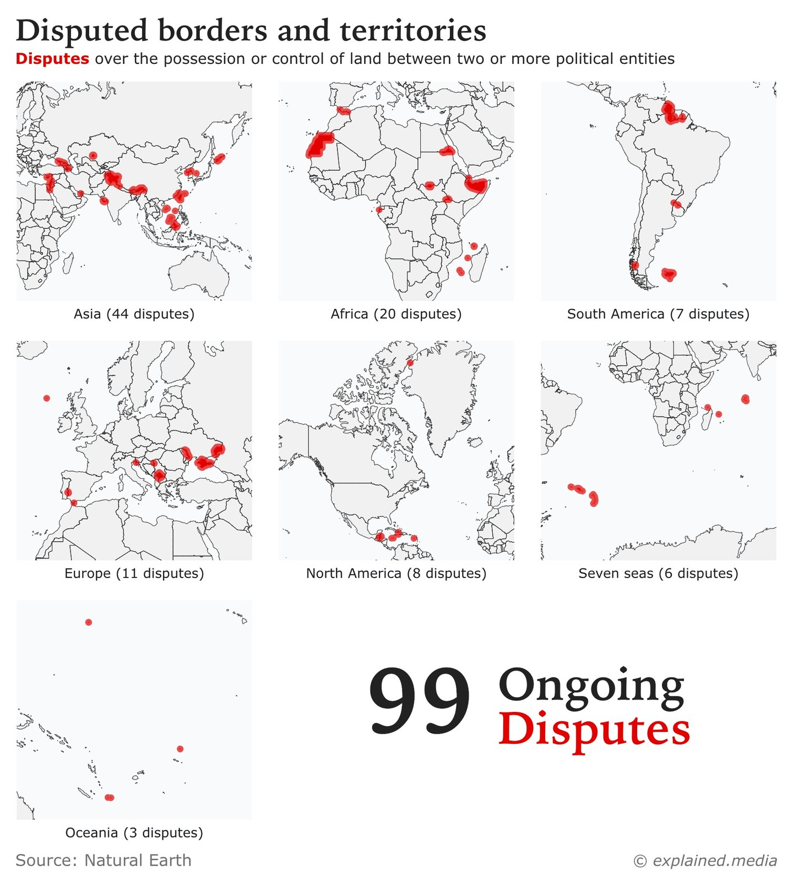

Senior data visualisation
engineer.
Interactive tools, dashboards, and data stories for NGOs, research teams, and newsrooms working with consequential data.
Taking on fixed-scope freelance projects.

10+ years dataviz Built Sweden's most-viewed COVID dashboard Spotify, UN, Aftonbladet (Sweden's #1 daily)
Clients
Most of what I build is internal: exploratory tools, dashboards, and analysis interfaces that teams use to find answers rather than read conclusions. The work is confidential; the clients are not.
Selected work
Erosion of European Democracy
A V-Dem exploration: a series of views built to answer different questions rather than one chart. A diverging heatmap makes year-on-year change scannable by country. A slope chart widens the lens to the full Europe-and-Caucasus region: 32 countries backsliding, 11 improving, between 2012 and 2022.


Same dataset, two views – each built to answer a different question about democratic decline.


Covid-19 Dashboard
Sweden's most-viewed COVID dashboard, maintained across the full arc of the pandemic. As the public story shifted, the dashboard was continually rebuilt to track what mattered at each stage, a live data product that had to keep evolving for years. Built and maintained under crisis conditions: shifting data definitions, daily source changes, and a general audience that needed clarity, not dashboards for analysts.
Infrastructure Security Map
Industrial networks are segmented into zones for safety, but most teams audit that segmentation in spreadsheets. The Zones and Conduits diagram inside Omny's platform turns it into a live, interactive map: assets are automatically categorised and their communication pathways visualised against the ISA/IEC 62443 standard. A custom tree layout nests multiple asset levels inside zones. Delivered freelance, concept to production.
Anomaly Front Page
The problem: surfacing the anomalies that
matter from terabytes of mostly time-series data.
The approach:
a monitoring tool structured as a
newspaper front page, auto-generated text
turns detected outliers into ranked, readable stories, some
shared across teams, some personalised, each linked to a
root-cause view.
Built
with data scientists and engineers on the underlying outlier
detection.

Disputed Borders
Makes disputed territories comparable at a glance for researchers and journalists covering geopolitics. Every contested region on one page, normalised so the reader can compare scale, shape, and context without switching between zoomed-in views.
Small multiples instead of one dense map – each region at its own scale so sparse continents stay legible.
Stockholm New Builds
Network Explorer
Board Game Taxonomy
Unga Mördare
Working together
Why clients bring me in
- Turn messy, high-stakes datasets into clear visual explanations
- Build production-ready interactive tools in React or Svelte, from concept to launch
- Go beyond what off-the-shelf BI and dashboard tools can do
- Work directly with researchers, journalists, analysts, and data scientists
- Accessible, responsive visualisations that hold up on low-bandwidth connections
How we'd work together
- Fixed-scope projects: an interactive report, explainer, dashboard, or exploration tool with a defined deliverable
- Embedded engagements: joining your product or editorial team as a senior specialist
- Direct with NGOs and research teams, or as a subcontractor through studios and agencies
Working on data that needs to be clear? Email me
About
Data visualisation is never neutral.
Every dataset has
boundaries someone drew, and every tool carries the assumptions
of its design.
That belief shapes the work I do.
Hi, I'm Patrick. I've built humanitarian knowledge systems for the United Nations, Sweden's most-viewed COVID dashboard for Aftonbladet, and financial analytics tools used across Spotify Finance. Today I lead the visualisation layer at Datastory.
I work best where off-the-shelf BI tools stop being enough, collaborating with researchers, data scientists, and journalists on complex or consequential data. I've also worked inside the UN system (UNOPS, 2009–11), hold a Master of Disaster Management, and build to the constraints that matter in the field: accessibility, low-bandwidth performance, and multilingual audiences. I work in English, Swedish, Polish, and French.
Also
- Founder, Explained studio
- Organiser, DataViz Stockholm meetup
- PREP certified (disaster preparedness)
Education
- MSc Intelligent Systems, UCL
- Master of Disaster Management, University of Copenhagen